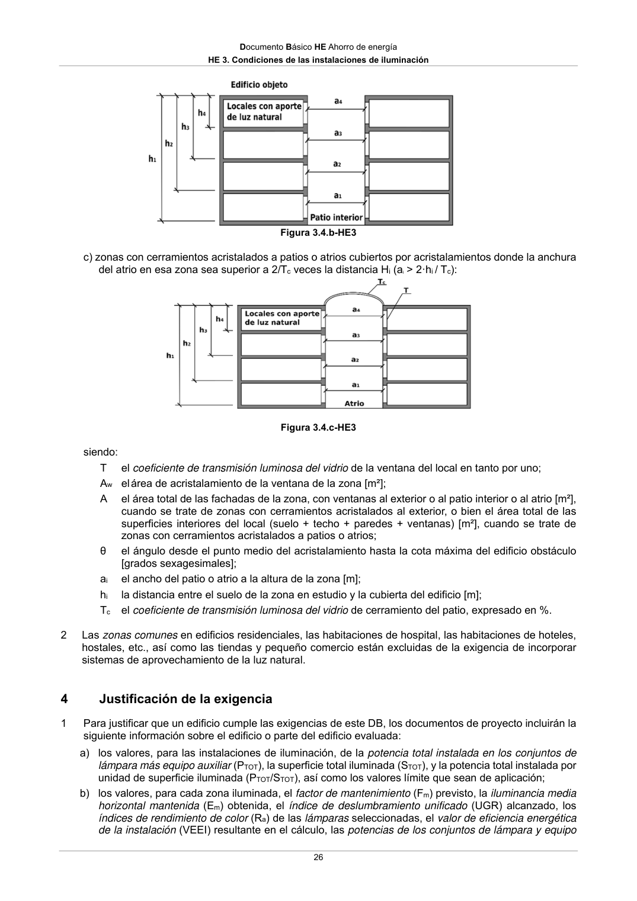

DB-HE Ahorro de energía · edición 2022-06-14 · capa oficial
Documento DB-HE-oficial · SHA-256 del PDF 7f890bd495552e979f83f72c5f5c7b642e745911a8e343a7b5b73023ce0e1f05
Copia fiel del PDF fuente · Fuente oficial
Ficha de la disposición en la fuente oficial
Formatos: JSON del segmento · Markdown
Justificación de la exigencia 1 Para justificar que un edificio cumple las exigencias de este DB, los documentos de proyecto incluirán la siguiente información sobre el edificio o parte del edificio evaluada: a) los valores, para las instalaciones de iluminación, de la potencia total instalada en los conjuntos de lámpara más equipo auxiliar (PTOT), la superficie total iluminada (STOT), y la potencia total instalada por unidad de superficie iluminada (PTOT/STOT), así como los valores límite que sean de aplicación; b) los valores, para cada zona iluminada, el factor de mantenimiento (Fm) previsto, la iluminancia media horizontal mantenida (Em) obtenida, el índice de deslumbramiento unificado (UGR) alcanzado, los índices de rendimiento de color (Ra) de las lámparas seleccionadas, el valor de eficiencia energética de la instalación (VEEI) resultante en el cálculo, las potencias de los conjuntos de lámpara y equipo Documento Básico HE Ahorro de energía HE 3. Condiciones de las instalaciones de iluminación 27 auxiliar (P), la eficiencia de las lámparas utilizadas (en términos de lm/W), así como los valores límite que sean de aplicación a cada uno de ellos; c) el sistema de control y regulación que corresponda a cada zona iluminada.
